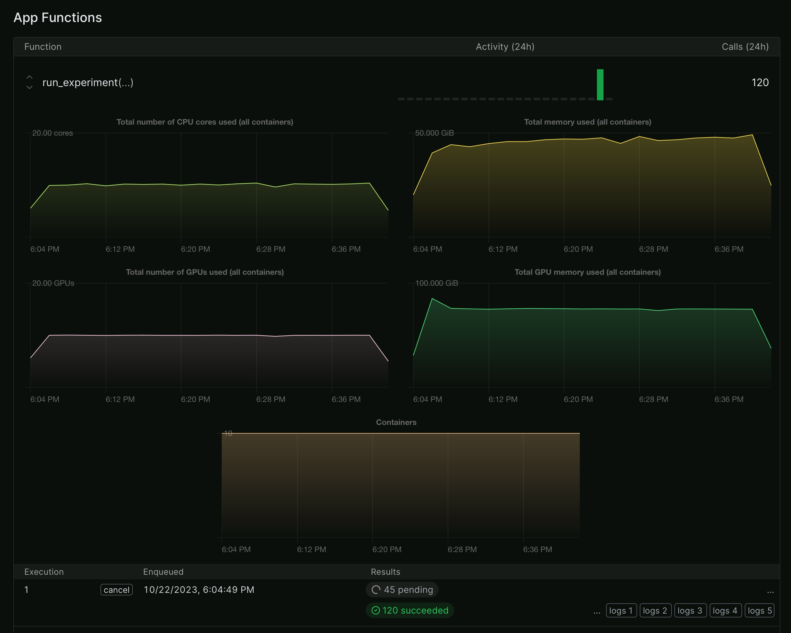

flowchart LR
A([Movie reviews]) --> B[Training set]
A --> C[Test set]
subgraph "Experiment"
B --> D[Subsample]
D --> E[Add label noise]
E --> F[Finetune]
H[Pretrained Model] --> F
F --> G[Finetuned Model]
G --> I[Evaluate]
end
C --> I
I --> J[Compare Accuracies]

Data labeled by analysts is a common source of training data for machine learning models. However, the quality of the labels can vary greatly, whether due to different interpretations of the task by different analysts, the inherent difficulty of the task or careless work.
For an organization looking to improve a model, they may either choose to re-label part of the data or collect more data. But how can they decide which option is better? I trained the same model 100 times on different number of examples with different amounts of label noise to find out.
I’ll use the IMDB movie review dataset as an example and train a transformer model to predict the sentiment of a movie review. This article loosely follows the HuggingFace tutorial on training a sentiment classifier.
Here’s an overview of the steps I’ll take:
- Split the movie reviews into a training and test set.
- Run experiments. For each combination of dataset size and label noise:
- Subsample the training set to the desired size.
- Flip a certain percentage of labels to introduce label noise.
- Fine-tune a pretrained transformer model on the training set.
- Evaluate the fine-tuned model on the test set.
- Compare the accuracy achieved by the model for each combination of dataset size and label noise.
Note
Quick overview of the IMDB Movie Review Dataset
It’s a dataset of 50,000 movie reviews from IMDB, labeled as positive (1) or negative (0). The dataset is split into 25,000 training and 25,000 test reviews. Let’s load it from HuggingFace and have a look:
from datasets import load_dataset
imdb = load_dataset("imdb")
imdb["train"].to_pandas().head(3)| text | label | |
|---|---|---|
| 0 | I rented I AM CURIOUS-YELLOW from my video sto... | 0 |
| 1 | "I Am Curious: Yellow" is a risible and preten... | 0 |
| 2 | If only to avoid making this type of film in t... | 0 |
And the balanced label distribution in the training set:
imdb["train"].to_pandas()["label"].value_counts()label
0 12500
1 12500
Name: count, dtype: int64Setup: Dataset size and label noise
Experiment grid
The next step is to define a grid of combinations of dataset size and label noise. As the actual accuracy achieved isn’t the main point of this experiment, and many models have to be trained, I’ll not use the full dataset. The dataset size will range from 1000 to 5,000 examples and the label noise (the percentage of labels that are flipped) will range from 0 to 25%.
import numpy as np
from itertools import product
dataset_sizes = np.arange(1000, 5001, 1000)
noise_levels = np.arange(0, 0.25, 0.025)
combinations = list(product(dataset_sizes, noise_levels))
print(f"Number of combinations: {len(combinations)}")Number of combinations: 50Dataset subsampling
On each run, I’ll subsample the training set to the desired size. To keep the balance of the labels intact, I’ll subsample the positive and negative examples separately and then concatenate them. To reduce time spent on evaluating the model, I’ll also subsample the test set to 2,000 examples.
from datasets import concatenate_datasets, Dataset
def subsample_hf_dataset(dataset: Dataset, max_size: int):
# Shuffle dataset
dataset = dataset.shuffle(seed=42)
# Separate datasets with labels 0 and 1
dataset_label_0 = dataset.filter(lambda example: example["label"] == 0)
dataset_label_1 = dataset.filter(lambda example: example["label"] == 1)
# Subsample datasets
subsampled_dataset_label_0 = dataset_label_0.select(range(max_size // 2))
subsampled_dataset_label_1 = dataset_label_1.select(range(max_size // 2))
# Concatenate subsampled datasets
return concatenate_datasets(
[subsampled_dataset_label_0, subsampled_dataset_label_1]
)
imdb_train = subsample_hf_dataset(imdb["train"], max(dataset_sizes))
imdb_test = subsample_hf_dataset(imdb["train"], 2000)Preprocessing
The transformer model expects the input to be tokenized and encoded. I’ll use the DistilBERT tokenizer for this.
from transformers import AutoTokenizer
tokenizer = AutoTokenizer.from_pretrained("distilbert-base-uncased")
def preprocess_function(examples):
return tokenizer(examples["text"], truncation=True)
tokenized_train = imdb_train.map(preprocess_function, batched=True)
tokenized_test = imdb_test.map(preprocess_function, batched=True)Next, convert the datasets to PyTorch tensors and pad the sequences to the same length.
from transformers import DataCollatorWithPadding
data_collator = DataCollatorWithPadding(tokenizer=tokenizer)Make some noise
To introduce label noise, I’ll randomly flip the labels of a certain percentage of the training set. Again, I’ll leave the balance of the labels intact.
from random import sample, seed
def flip_labels(dataset: Dataset, noise_level: float):
# make the operation deterministic
seed(42)
# get number of labels to flip
n = int(len(dataset) * noise_level)
n_by_class = n // 2
# get indices of labels to flip
neg_indices = [i for i, example in enumerate(dataset) if example["label"] == 0]
pos_indices = [i for i, example in enumerate(dataset) if example["label"] == 1]
selected_neg_indices = sample(neg_indices, n_by_class)
selected_pos_indices = sample(pos_indices, n_by_class)
# combine indices
indices_to_flip = selected_neg_indices + selected_pos_indices
# function to apply to flip the labels
def flip_labels_function(example, idx: int):
# flip the label if index is in the selected indices
# this is not the fastest way to do this, but it's easy to understand
if idx in indices_to_flip:
example["label"] = 1 if example["label"] == 0 else 0
return example
# apply function to flip the labels
return dataset.map(flip_labels_function, with_indices=True)This function will be used later in a loop.
Training the model
First, we download a pre-trained transformer model that has not been fine-tuned for sentiment classification yet. One of the most commonly used models is DistilBERT, a smaller, more efficient version of BERT.
from transformers import AutoModelForSequenceClassification
import torch
model = AutoModelForSequenceClassification.from_pretrained(
"distilbert-base-uncased", num_labels=2
)Some weights of DistilBertForSequenceClassification were not initialized from the model checkpoint at distilbert-base-uncased and are newly initialized: ['classifier.bias', 'pre_classifier.bias', 'pre_classifier.weight', 'classifier.weight']
You should probably TRAIN this model on a down-stream task to be able to use it for predictions and inference.Next, let’s set the training arguments.
from transformers import TrainingArguments
train_args = TrainingArguments(
learning_rate=2e-5, # how fast the model learns
per_device_train_batch_size=16, # how many training examples are processed at once
per_device_eval_batch_size=16, # how many test examples are processed at once
num_train_epochs=2, # how many times the model sees the training data
weight_decay=0.01, # how much the model is penalized for being complex
output_dir="./results",
)After training, we’ll evaluate the model on the test set. The evaluation metric is accuracy, the percentage of correctly classified examples.
from datasets import load_metric
def compute_metrics(eval_pred):
load_accuracy = load_metric("accuracy")
logits, labels = eval_pred
predictions = np.argmax(logits, axis=-1)
accuracy = load_accuracy.compute(predictions=predictions, references=labels)[
"accuracy"
]
return {"accuracy": accuracy}Finally, we have all the pieces to run the experiment. Let’s put them together in an experiment function.
from transformers import Trainer
import time
def train_and_evaluate(dataset_size: int, noise_level: float) -> dict:
train_sub = subsample_hf_dataset(tokenized_train, dataset_size)
train_sub = flip_labels(train_sub, noise_level)
trainer = Trainer(
model=model,
args=train_args,
train_dataset=train_sub,
eval_dataset=tokenized_test,
tokenizer=tokenizer,
data_collator=data_collator,
compute_metrics=compute_metrics,
)
train_start = time.time()
trainer.train()
train_time = time.time() - train_start
evaluation = trainer.evaluate()
evaluation.update(
{
"dataset_size": dataset_size,
"noise_level": noise_level,
"train_time": train_time,
}
)
return evaluationThis function runs the experiment:
flowchart LR
A([Training set]) --> B[Subsample]
B --> C[Add label noise]
C --> D[Finetune]
E[Pretrained Model] --> D
D --> F[Finetuned Model]
F --> G[Evaluate]
Finally, we can run the experiment and save the results to a CSV file.
import pandas as pd
results = pd.DataFrame()
for dataset_size, noise_level in combinations:
evaluation = train_and_evaluate(dataset_size, noise_level)
results = pd.concat([results, pd.DataFrame([evaluation])])
with open(results_path, "w") as f:
pd.DataFrame(results).to_csv(f, index=False)
Note
Note that this loop runs slowly unless you have a GPU available. Rather than actually running the experiment in a single loop on my laptop, I’ve combined the code in a Python script that parallelizes the experiment on Modal using up to 20 A10G GPUs in parallel. In addition, that script features a wider range of dataset sizes and label noise levels and doesn’t subsample the test set. All further code snippets in this article are based on the results from that script.

The total cost was $30. This fit into the free tier of Modal.
Results
Let’s plot the accuracy achieved by the model for each combination of dataset size and label noise.
import plotly.graph_objects as go
import pandas as pd
df = pd.read_csv("./results_from_modal.csv")
# Pivot the dataframe
pivot_df = df.pivot(index="train_size", columns="noise_level", values="eval_accuracy")
# Create text for hover tooltip
hover_text = [
[
f"Training examples: {y}<br>Noise level: {x}<br>Accuracy: {z}"
for x, z in zip(pivot_df.columns, row)
]
for y, row in zip(pivot_df.index, pivot_df.values)
]
fig = go.Figure(
data=go.Heatmap(
z=pivot_df.values,
x=pivot_df.columns.values,
y=pivot_df.index.values,
hovertext=hover_text,
hoverinfo="text",
colorscale="Viridis",
colorbar=dict(title="Accuracy"),
)
)
fig.update_layout(
xaxis_title="Noise Level",
yaxis_title="Training Examples",
)
fig.show()The heatmap is interactive, so you can hover over the cells to see the exact accuracy achieved for each combination of dataset size and label noise.
What can we learn from this plot?
- The accuracy increases with the number of training examples, as expected.
- Accuracy decreases with noise level, as expected.
- Dataset size can compensate for a certain amount of label noise.
- Even with a noise level of 0.25, the model can still achieve an accuracy of 0.89 with 15,000 training examples. This demonstrates a robustness to label noise.
- The task is rather easy. Even with just 1,000 examples and a noise level of 0.25, the model achieves an accuracy of 0.85.
How can number of examples and noise level be traded off? Let’s find out with a regression model.
import statsmodels.formula.api as smf
# Transform train_size to 1000s
df["train_size_1k"] = df["train_size"] / 1000
# Transform noise and accuracy to percentages
df["noise_level_pct"] = df["noise_level"] * 100
df["eval_accuracy_pct"] = df["eval_accuracy"] * 100
# Fit a model and extract coefficients
model = smf.ols("eval_accuracy_pct ~ train_size_1k + noise_level_pct", data=df).fit()
pd.DataFrame(
{
"Coefficient": model.params,
"P-Value": model.pvalues,
"Conf. Int. Lower": model.conf_int()[0],
"Conf. Int. Upper": model.conf_int()[1],
}
)| Coefficient | P-Value | Conf. Int. Lower | Conf. Int. Upper | |
|---|---|---|---|---|
| Intercept | 89.683593 | 2.109041e-288 | 89.446360 | 89.920826 |
| train_size_1k | 0.226422 | 3.696455e-49 | 0.205562 | 0.247282 |
| noise_level_pct | -0.103253 | 3.439962e-40 | -0.114654 | -0.091853 |
The regression model provides coefficients that estimate the importance of each variable. All are significant at the 0.01 level.
In this simplified model, each percentage point of noise is worth as much as 2,000 examples. Note that the model’s logic is failing at the extremes. For example a model with 0 examples wouldn’t be able to achieve a baseline accuracy of 89.7% as indicated by the intercept.
Conclusion
In this article, I’ve shown how to train a model on different amounts of data with different amounts of label noise. The results show that the model is rather robust to label noise, meaning that more data can make up for a certain amount of label noise. That doesn’t mean that label noise is not a problem, but that prioritizing data collection over label correction can be a viable strategy.
One drawback of this experiment is that it only considers a single popular model and a single dataset. It would be interesting to see if the results generalize to other models and datasets.